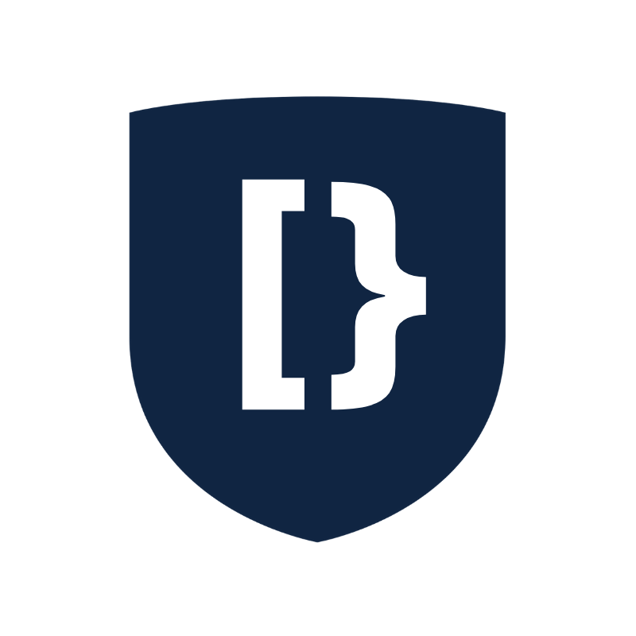
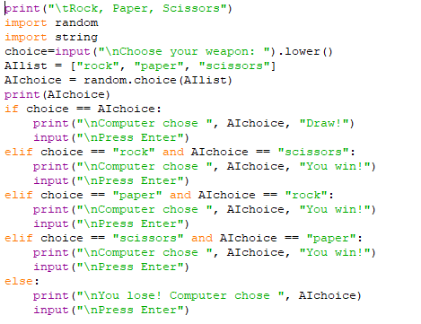
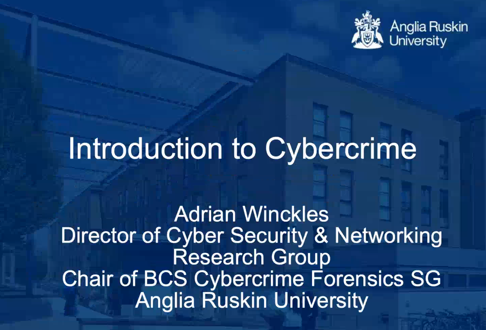

DevSoc
Python Workshop 1.0 and 2.0 - 4 hours CPD
I have found DevSoc to be one of the most active societies at NTU.
They proved really helpful and active on their Discord server, lots of events and lots of help to first year students in their dedicated channel.
The only downside is that they can't offer more than 10 CPD hours, because they sure offered more than that plus pointing me in the direction of more online learning.
Their Python Workshops, 1.0 and 2.0 provided very good information and the possibility to ask questions and get clear and concise answers.
In short I think I have found a platform in which to pass on the information I gathered in this first year and pass it on to next year's first years.
Master the Mainframe Workshop - 2 hours CPD

The workshop was a great resource for getting started with the IBM Master the Mainframe challenges available until January.
Help was offered with installing the required software VSCode, NodeJS and Java as well as setting up with ZOWE and IBM OpenZ Editor.
Introduction to Cybercrime with Adrian Winckles - 2 hours CPD
The workshop was a wonderful overview of the Cyber Crime terms and legislation. It covered some of the techniques used by criminals and the law enforcement institutions that investigate such crimes
The Q and A also provided some insight into whether or not to pursue a career with law enforcement Cyber Crime Units after completing the studies.
Go to top